Index
Startup :: Creating
buy scripts :: Editing buy scripts ::
Editing game settings :: Misc / Other
Editing configuration settings
There is certain configuration settings that bind
maker allow you to edit which are not in your standard options. These items are located in your “Config
Editor” tab.
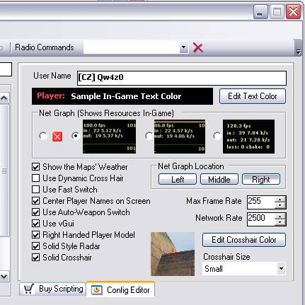
Version 1.1.7
doesn't support customization of these settings for
Counter-Strike
Source.
It is however,
more options will be available in the next release.
Settings Definitions
- User Name – this is
the name you wish to use in-game.
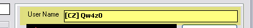
- Text Color – this
allows you to change the color of your text in game.
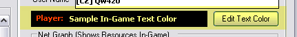
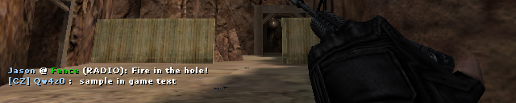
Sample Text Color (as white)
- Net Graph – this is
the graphs that show up in the corner of your screen to show you
certain statistics about your game. Selecting
the red [X] disables this option.
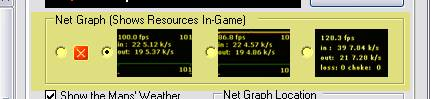
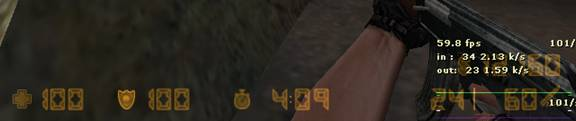
Net Graph 1
Net Graph 2
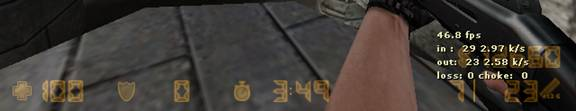
Net Graph 3
- Net Graph Location –
specifies the location of your net graph in game. Figure
2 shows the physical location of the graph in game:
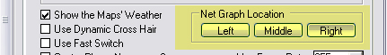
Fig 1
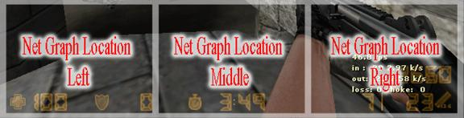
Fig 2
- Various Settings –
There are various settings that are and are not available in your
standard options menu. Hovering
your mouse over each gives you a description of each.
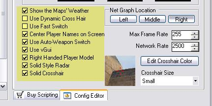
- Frame Rate – allows
you to adjust your Max FPS (frames per second) allowable in game.
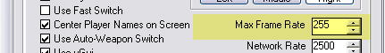
- Network Rate – allows
you to adjust the rate at which data is sent to and from the server
across your network. This is useful for
optimizing game play for faster connections.
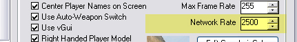
- Crosshair Adjustments –
allows you to adjust how your crosshair will look in game. The bottom
checkbox option is also a crosshair adjustment for transparency.
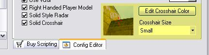
Fig 1 adjust color, size and transparency of your
crosshairs.
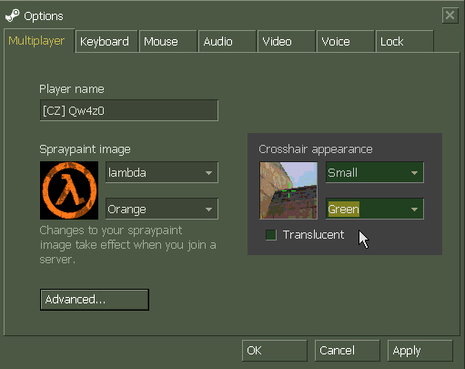
Important Note: if you set the color of your crosshairs in
bind maker and go into your games’ options menu, your crosshair in
there will most likely show up as green (as they are only able to draw
5 different colors in that dialog window) but the color in game will be
whatever you have selected in bind maker as long as you do not use this
options window to change your settings (if you do, you will get a green
crosshair again).
« Back to Top